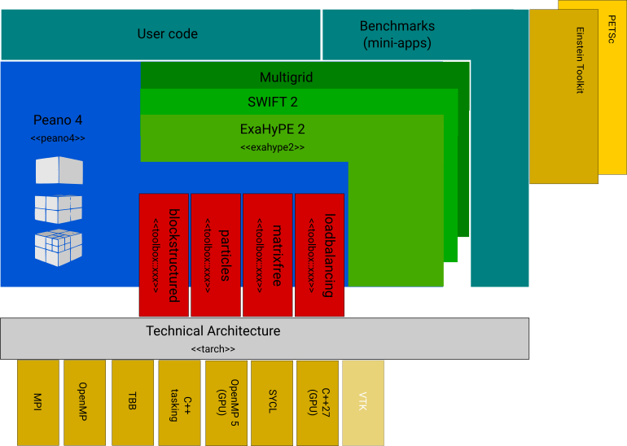
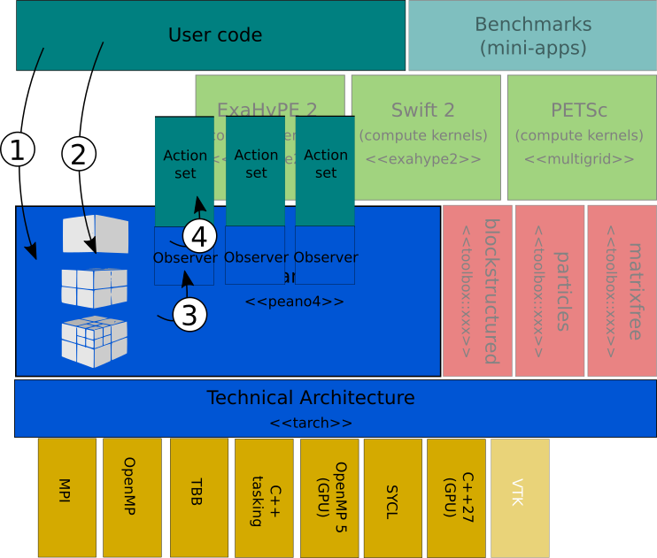
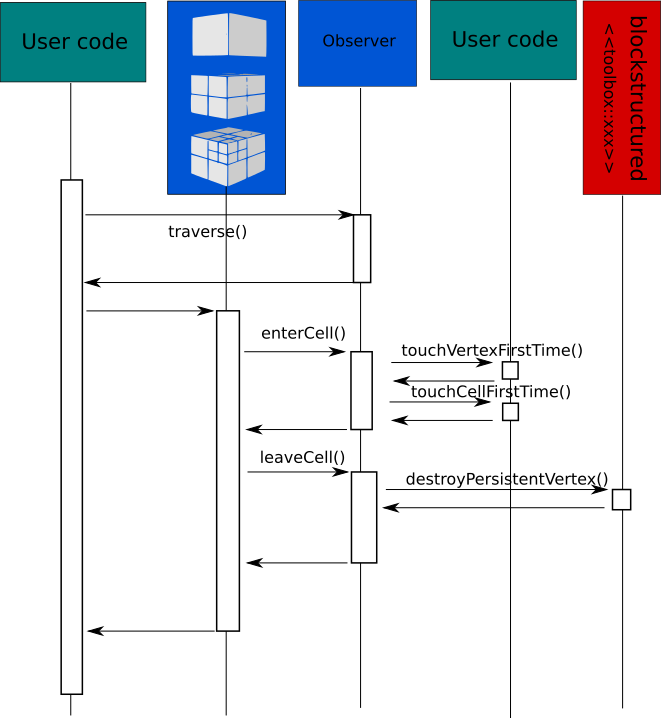
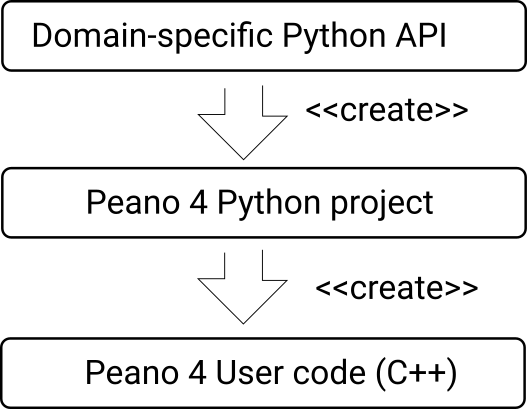

A Peano 4 application is a plain C++ code organised into layers. Users obviously might want to inject Fortran or similar, but Peano 4 itself sticks to C++. There is a Python API, but this Python API is merely a code generator, i.e. it produces stand-alone C++ executables.
Code organisation
Peano is organised into layers. The componentes per layer are delivered as static libraries. All their C/C++ code is holds within the directory src. Peano's layer architecture applies to all simulations built on top of Peano, too, i.e. every Peano application, at the end of the day, follows a similar architecture blueprint.

- Technical Architecture (tarch) The technical architecture provides unified interfaces for tasking, the logging, GPU offloading, basic linear algebra, and so forth. It is a set of loosly coupled building blocks that hide away technical details. It is used by Peano's core, all the toolboxes, extensions, and we also recommend the user codes to use the features from the tarch. Details on the tarch are given in the core Peano documentation. There's for example a namespace to handle multicore parallelism, a logging component, or a collection of primitive linear algebra routines for small problems. It is written solely in C++ and its purpose is to hide away third-party dependencies such as OpenMP or MPI. I originally designed it as a stand-alone thing which is not tied to Peano though I'm not aware of any other project that currently uses it. The layer is pronounced `‘T Arch’' and is encapsulated in a namespace tarch, as I didn't want to write the full name technical architecture every time.
- Peano The namespace peano4 hosts the Peano 4 core. It is entirely written in C++ (using the tarch) and holds the heart and brain of the code, i.e. all the data management, the mesh management, the tree traversals and the domain decomposition. This core is
- Toolboxes There are multiple toolboxes shipped with Peano. These add generic, solver-independent ingredients such as particle management or support for blockstructured meshes which can be embedded into the Peano trees. Using the technical architecture to be independent of the tasking backend, e.g., or to provide well-defined logging, they are on the same abstraction level as a mesh management or the domain decomposition, though they are typically way smaller than Peano and focus on one particular subaspect.
- Peano 4 extensions Extensions to Peano such as ExaHyPE usually are built on top of Peano plus some toolboxes. They provide a higher abstraction level than Peano or the toolboxes and basically tailor the AMR and the features provided by the toolboxes to one particular problem domain.
- User code The actual user code sits on the top level and solves one particular problem. Some user codes are built on Peano (and maybe some toolboxes). Other user codes use the extensions such as ExaHyPE. Besides the user code, Peano's repository also ships a set of benchmarks. They are similar to mini-apps and typically benchmark certain machine or algorithm properties.
Simulation workflow
The simulation workflow inverts the control flow between the layers. This is, to a certain degree, a usp of Peano and discussed in the original Peano TOMS paper, where we use the term Hollywood Principle to explain this design decision. Roughly, any Peano 4 application realises the following control flow:

- The user codes hosts the main file. It creates a spacetree. If you have a run a parallel code, each rank hosts a sets of spacetrees, as spacetrees can decide to fork.
- The user's main runs through its algorithmic steps. Per step, it might decide to trigger a mesh traversal. In this case, it tells Peano 4 to run through all the spacetrees. Once you call peano4::parallel::SpacetreeSet::traverse(), you have no control over the traversal anymore. It is Peano that ensures that all spacetrees are traversed, but it retains control in which order, where to parallelise, what the precise order is (subject to some constraints) and so forth.
- Throughout the traversal, the Peano core informs a peano4::grid::TraversalObserver about observations. The notifications (callbacks) are basically messages that the traversal has entered a cell or left it. They however are supplemented with a lot of contextual information.
- The observer is an object that the user code passes into traverse(). It can be very simple (visualise a cell, e.g.) but it can also take the contextual information passed as argument and break them down into actions. These actions comprise, hey, I've just read a vertex for the first time, or I am about to kick off a traversal of a tree, I've just left a mesh cell, and so forth. If the observer breaks a notification down into these individual actions, it can call one function per action from the user code.
Most extensions provide the implementations of the actions and map them in turn again on domain-specific routines. If you enter a cell for the first time, you migth for example decide to move all particles within that cell, or update a finite volume solution. Therefore, the sketch above blends out the toolbox and the extensions. They play some of the roles described above, but they do not alter the principles.

Python API
As you can pass in a different observer per traversal, you can trigger different algorithmic steps. All of this requires significant work: A user has to write an observer class per algorithmic step, write the observer's mapping onto actions, and eventually has to implement these action sets, even though some of them might be trivial. Therefore, Peano 4 comes along with a Python API.
This Python API provides the opportunity to specify these different observers and to add to each observer a sequence of action sets. Eventually, users have to invoke generate() and the Python API will generate all required C++ classes, leaving the body of the action sets and the main routine to the user to implement.
Most extensions of Peano 4 (such as ExaHyPE 2 or Swift 2 or our MGHyPE extensions) add an additional layer: They provide a domain-specific API. In this API, users describe what they want to do. The API manages a domain-specific project. Every time the user adds a new feature, the API breaks this down into the
- data required to implement this feature
- grid traversals, i.e. algorithm steps, required to implement this feature
- actions required to realise this feature
and they add it to an internal Peano 4 Python object.

Eventually, this Python 4 object is returned. It now contains a description of all observers, action sets, and additional classes that we need to run the experiment. The user can now call generate() on the Python 4 project. This generates all the classes in plain C++ plus a Makefile. Classes means actual computations but also all glue code that is required to make Peano's core interact with any user C++ code. So the top-level API represents the domain knowledge. The Peano 4 Python object represents how the data and behaviour will be implemented eventually. The C++ view then is the actual implementation.
Build variants
Peano currently is delivered as a set of archives, i.e. static libraries. By default, the code builds various versions of each library:
- Each archive variant is available as a release version, as a debug version, as a version with tracing and assertions and as a tracing-only version.
- Each archive variant is available as 2d build and as 3d build. If you need higher dimensions, you have to build the required libraries manually.
The version terminology is as follows:
- debug The debug versions of the archives all have the postfix
_debug. If you link against these versions, the full set of assertions, of all tracing and all debug messages is available; though you can always filter on the application-level which information you want to see.
- asserts Thsee versions of the archives all have the postfix
_asserts. If you link against these versions, all assertions are on. The code also contains tracing macros (see below).
- tracing The release versions of the archives all have the postfix
_trace. If you link against these versions, all assertions and debug messages are removed, but some tracing is active. You can switch on/off the tracing per class, and different tracing backends allow you to connect to different (profiling) tools.
- release The release versions of the archives have no particular postfix. They disable tracing, any debugging and all assertions. These archives should be used by production runs.
Peano's release components still write info messages (they suppress debug, tracing and logging, but not essential information). If you want to filter out these messages, too, you have to apply a log filter.
Repository organisation
Peano's core is a collection of static libraries. A Peano application consists of C++ glue code which combines all of these libraries. This glue code is generated through the Python API.
- documentation Hosts the sources of the document that you hold in your hands. large-scale Peano applications.
- src Holds the C++ Peano sources of the Peano core and all the toolboxes.
- src/api Holds the Python API scripts. Within the
api subdirectory, you find scripts for both the Peano core API, toolboxes and large-scale Peano applications.
- tests Collection of small test cases that can be automised.
- benchmarks Collection of benchmark scripts.
- applications Proper, real-world applications.